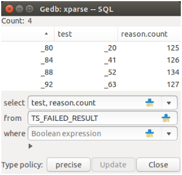

Figure 7: An SQL table part. _80, …, _63 are object idents while 125 …127 in the last column are the values themselves.
Another data window can be opened from menu Window → SQL table Its purpose is to simulate the SELECT command of SQL. The debugger maintains for each reference type an SQL table (conceptually, not really). The table columns are the type’s attributes, and the table rows are all objects of this type that are reachable from the current routine (i.e. from target, arguments, and local variables) by deep traversal. During the traversal consecutive numbers are assigned to each reference object encountered (starting with “1” for Current). These numbers (with a leading underscore) are then shown in the window and are at the same time the numbers shown in the main Data window when the ident formatting is chosen. A special meaning have the idents “0” and “?”: “0” denotes a void reference and “?” a reference to an object that has no ident since it has been created during the call of a function. Data of basic expanded types are shown in the natural format and data of other expanded types are (recursively) expanded to their fields. The idents remain valid as long as the debuggee is not running and the stack level is not changed. The idents are refreshed after run and stop of the debuggee and when the stack level has been changed (i.e. at the same events when the idents of the Data part will be refreshed).
Issuing a SELCET command to this table consists of filling one to three text fields in the window and then clicking button Update (a separate update action is necessary to inform the debugger that all three input fields have got their values, the click on a single input field may be misleading; input fields select and where need to be clicked by their own to accept the entered string). The entries are:
(see Sec. 3.2 for entering a type name or expressions). The expressions of any nested level may refer to the matching object by a leading placeholder “?”. This is particularly important if a name clash of a from type’s query with a local variable occurs: the local variable takes precedence and the query should be written like “?.query”. In any case, the type name should be entered first to ensure that expression validation of the two other entries can be successful (the arrangement of the entries is for tradition’s sake). Further, the expression list in the select field is always extended by a leading element (i.e. a leading column in the table shown): the ident of the row’s object.
Restrictions
- The expressions in the select field must not contain ranges (precisely, they are silently ignored): the number of matching indices may vary from row to row and no appropriate table width can be obtained in advance.
- The expressions in the select and where fields must not contain object idents: the idents are newly computed and previous settings have become invalid.
The SQL table part allows for two policies to filter objects. The policy is chosen by clicking the precise/conform button:
Known deficiencyIn case that a descendant type renames attributes or other queries then the output does not follow the renaming, the output may look very spurious. The reason is that the meta information generated by the compiler for use of the debugger does not (not yet?) include information about renamings. No such problems occur for the precise type policy.
The SQL table part provides the following actions:
A final remark. It was not intended to implement all features of SQL command SELECT or even a full database, so the debugger’s SELECT query is rather poor: only one table is supported at one time (no JOIN), no grouping (no GROUP BY, HAVING), and no explicit sorting (no ORDER BY, but there is implicit sorting by GUI manipulation).